地图与空间导览
调研国内外地图、室内外导览和景区类产品后，我将重点放在 POI 层级、路线选择、当前位置、目的地行动和地图信息密度上。
Research focus: POI hierarchy, route choice, current location, destination actions.
2026 · Product UX · Service system
为同程旅行景区 AI 导览建立一套可复用的设计标杆：从国内外地图、室内外导览和景区服务产品调研出发，重构景区首页、路线导览、讲解点内容与足迹沉淀，最终支持国内 30+ 景区接入上线。
A scalable AI guide framework connecting research, interaction logic, visual standards, and multi-destination deployment.
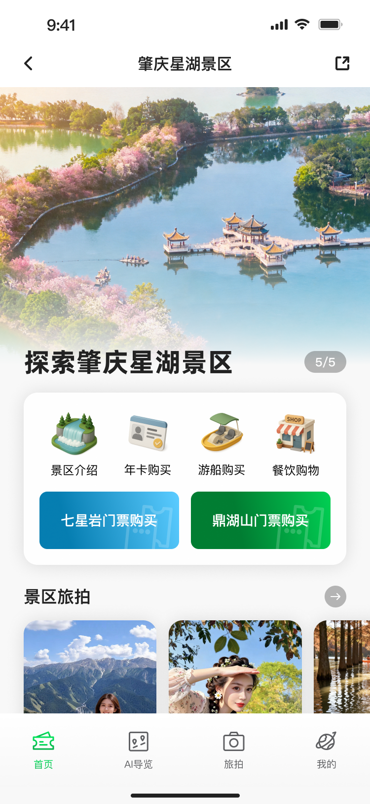
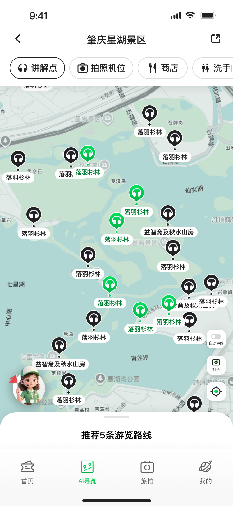
Design challenge
景区导览不是单一页面问题，而是一个多场景服务系统。游客需要知道“有什么、怎么去、听什么、玩过什么”，景区则需要在不同地图、路线、内容密度和服务能力之间保持体验统一。
Scenic guide design is a service-system problem: destination identity, map navigation, audio guide content, route decisions, and post-visit memory need to work together.
如果每个景区都单独设计，首页结构、讲解点内容、路线状态和服务入口会很快碎片化。因此项目重点不是做一套漂亮界面，而是建立可复制的交互规则和视觉规范。
The key was to build reusable logic instead of isolated screens, so different scenic areas could keep their own identity while sharing one guide framework.
Research to design
调研国内外地图、室内外导览和景区类产品后，我将重点放在 POI 层级、路线选择、当前位置、目的地行动和地图信息密度上。
Research focus: POI hierarchy, route choice, current location, destination actions.
AI 不应只是聊天入口，而应该把自然语言问题转译成可操作的服务结果，例如景点讲解、路线推荐、餐饮、文创、厕所、酒店和附近服务。
AI was reframed as a structured service layer, not a generic chat box.
不同景区需要保留自身图片和氛围，但交互容器必须稳定。我沉淀了卡片、标签、底部播放器、行动按钮和内容模板，支撑多景区替换。
Reusable UI containers allow scenic identity to change without breaking the system.
System framework
Product screens
首页不是简单聚合入口，而是游客进入景区后的决策中心：先建立景区氛围，再提供 AI 提问、门票、年卡、游船、餐饮等服务入口，并继续承接旅拍与推荐讲解点。
Destination identity first, then AI assistance, service shortcuts, and discovery.
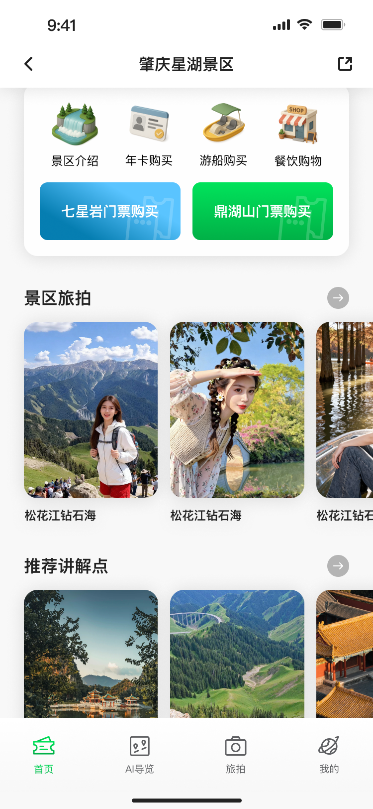
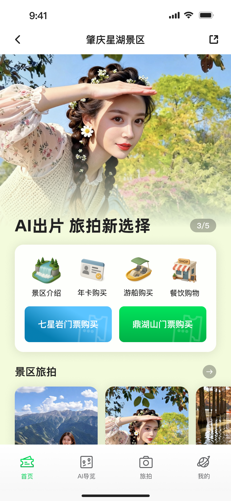
路线模块把“看地图”拆成连续决策：选择游览路线、比较路线列表、进入路线详情，再通过底部播放器持续保留讲解能力，让用户不会在移动中失去上下文。
Route logic: compare, enter, follow, and keep audio guidance available.
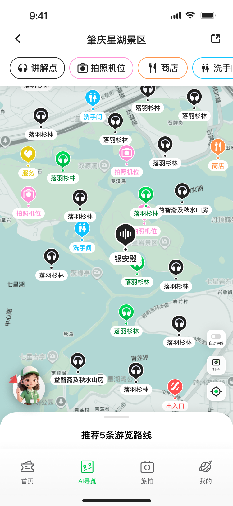
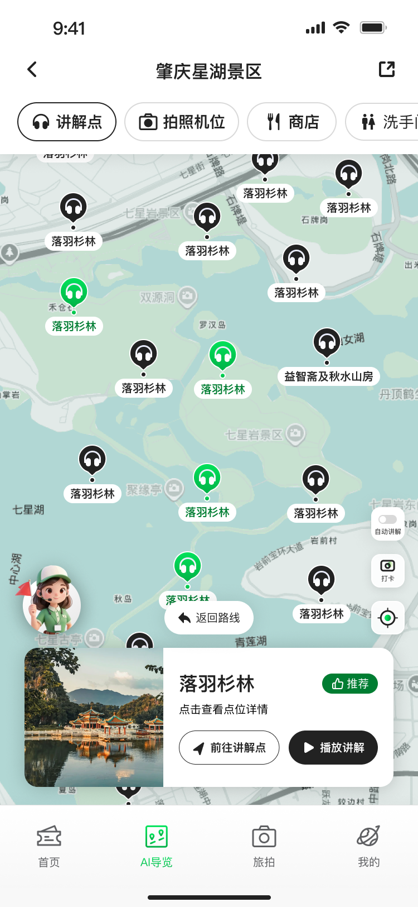
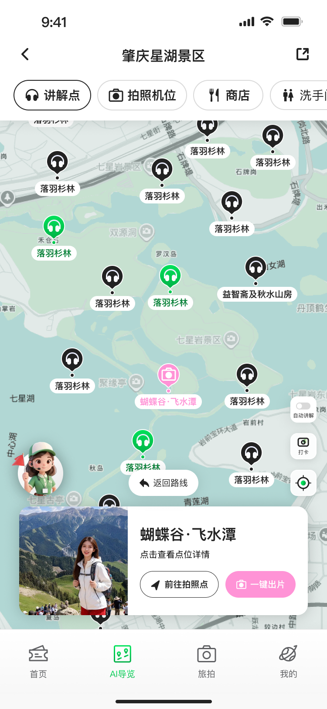
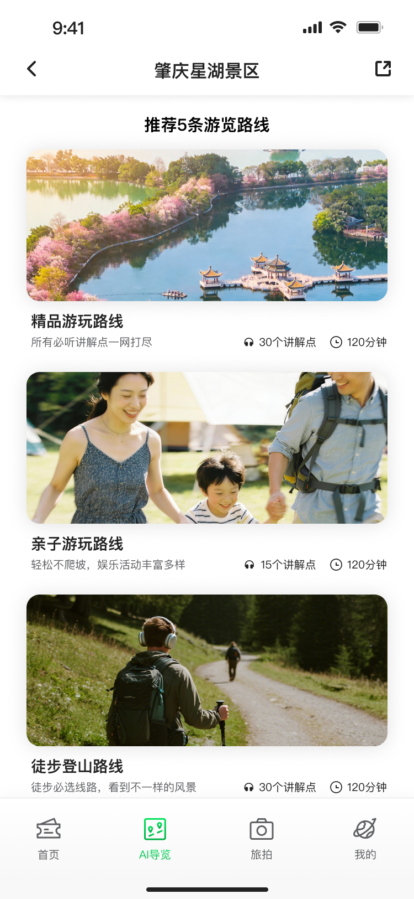
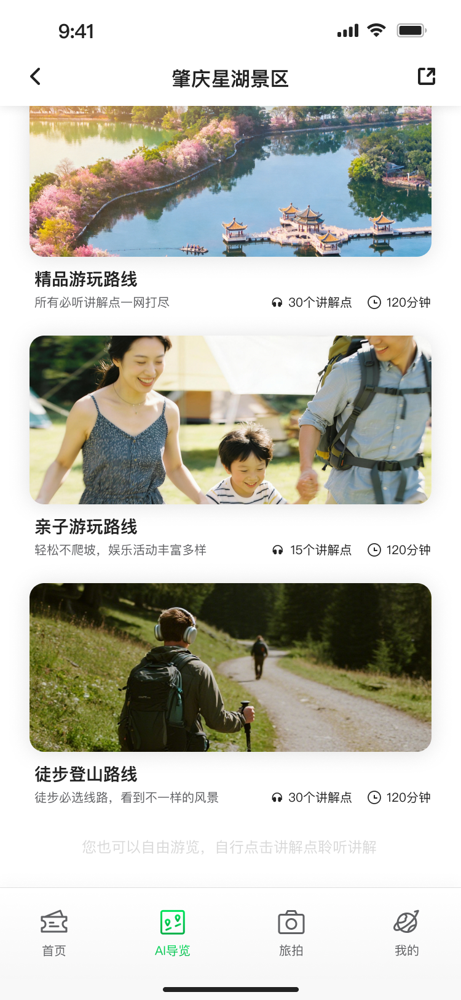
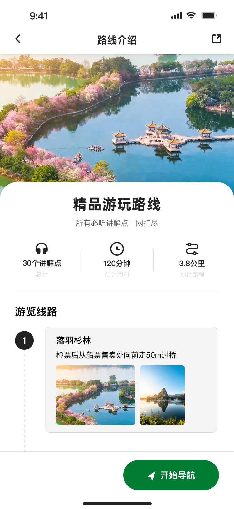
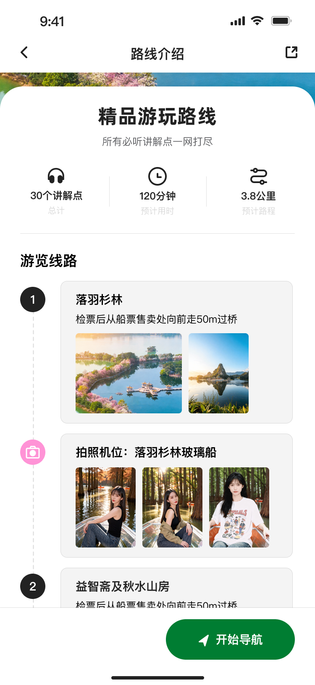
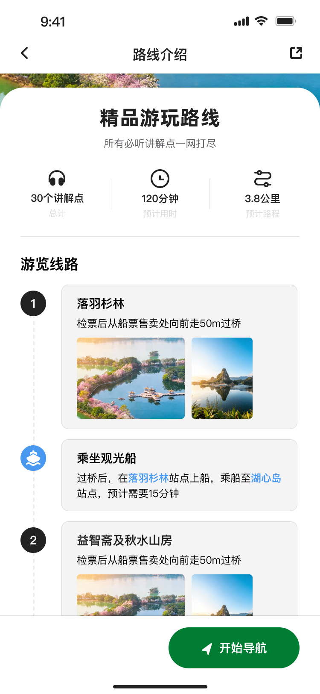
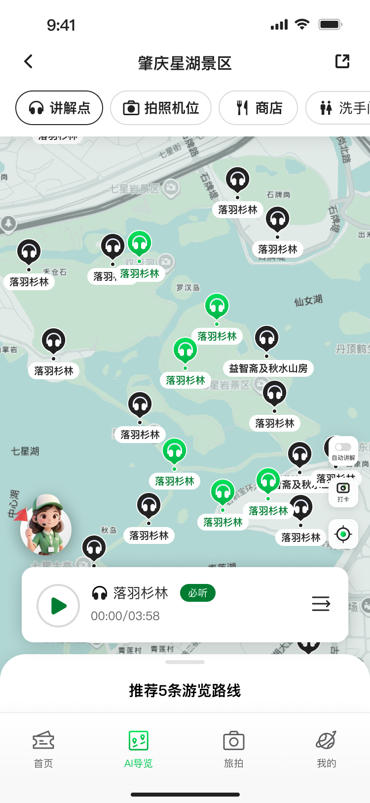
讲解点详情需要适配不同内容类型：人文历史、动植物科普、游玩设施、语音讲解和前往路线。因此页面采用统一信息层级，让内容可替换但阅读节奏一致。
POI templates support different content types while keeping hierarchy consistent.
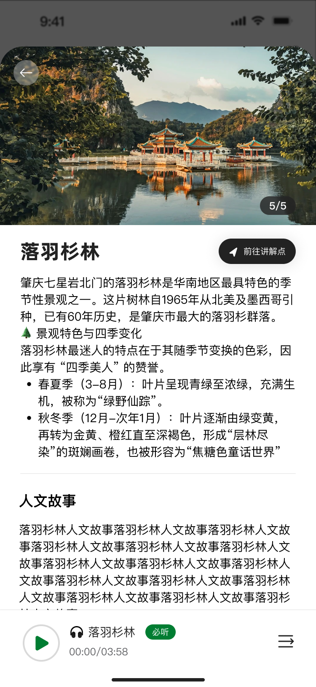
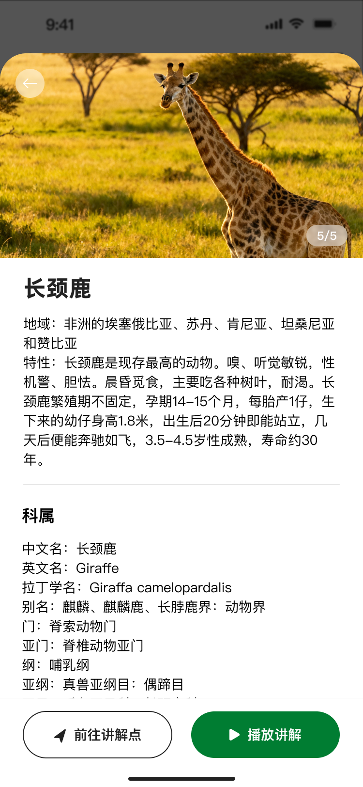
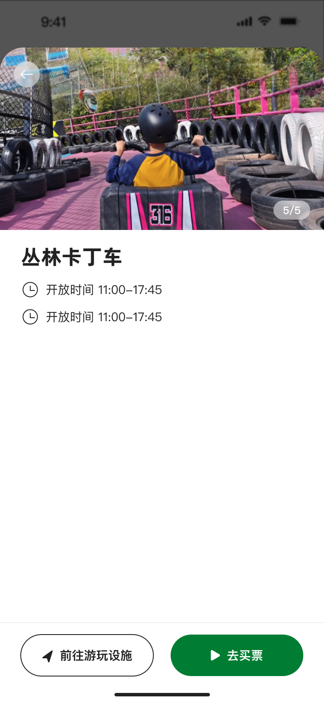
足迹模块是这个项目里更有故事感的部分。它把游客走过的路线、到达过的点位和拍摄过的照片重新组织成个人游览记录，让导览从“当下找路”延展到“回看我如何经历这个景区”。
这让产品不只是工具，也像一个轻量的旅行档案：地图记录路径，相册保存瞬间，用户离开景区后仍然能回到自己的游玩故事里。
Footprints turn routes, visited spots, and photos into a personal travel archive.
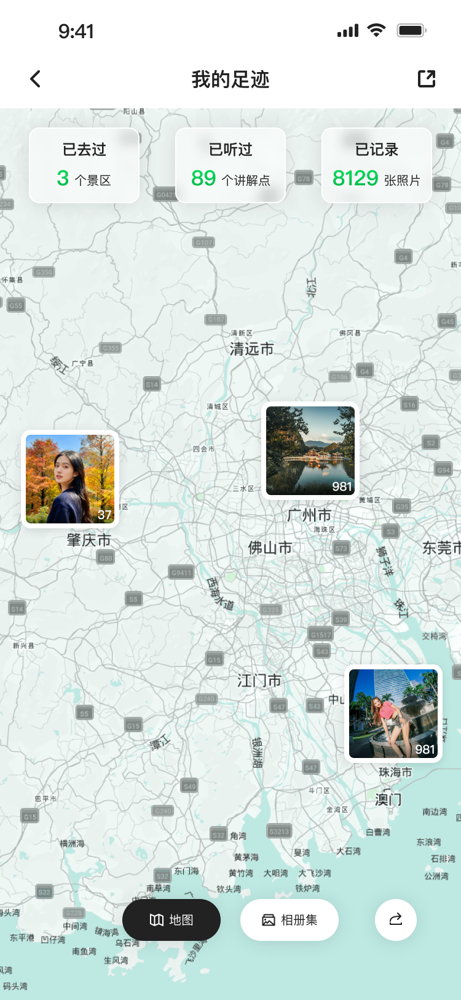
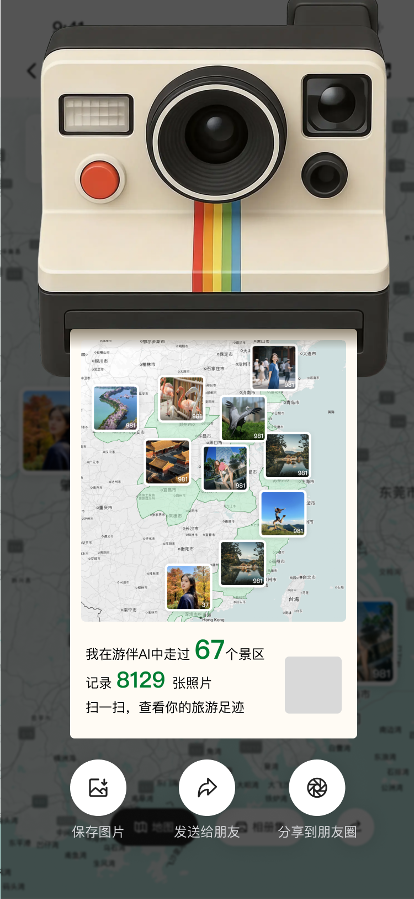
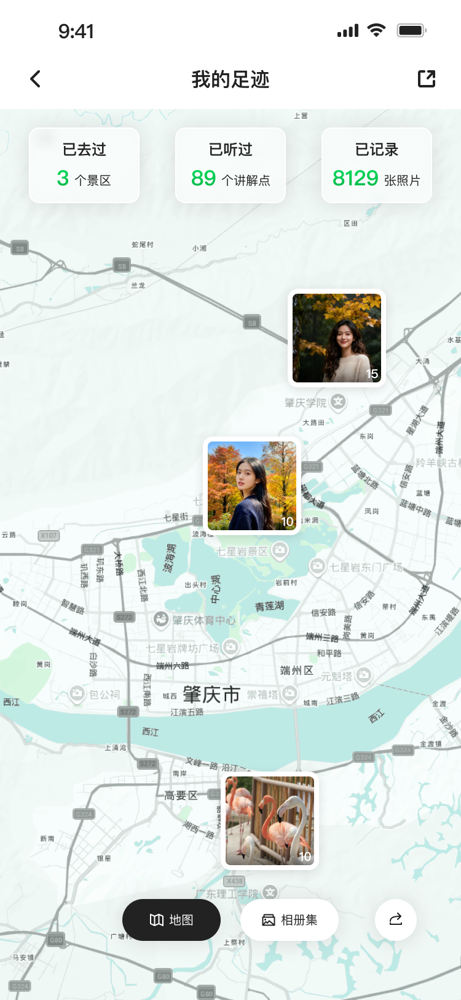
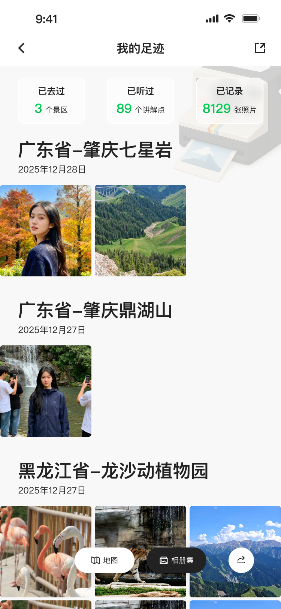
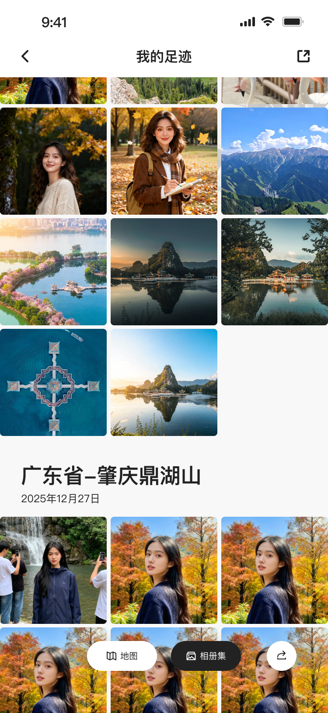
Interaction logic
同时支持自由输入和快捷问题标签。快捷问题降低游客“我不知道能问什么”的压力，自由输入则保留 AI 的开放性。
Preset prompts reduce blank-state friction while free input keeps AI flexible.
AI 回答不只输出文本，而是根据问题类型返回对应模板：路线、讲解点、餐饮、文创、厕所、酒店或其他服务信息。
Answers are mapped into templates such as route, POI, facility, restaurant, or hotel.
每类结果都必须给出下一步，例如前往讲解点、听讲解、前往餐厅、前往商店。这样 AI 不停留在“回答”，而是推动真实游玩。
Each result connects to a next action, closing the gap between information and movement.
Outcome
最终方案不是单个景区的定制页面，而是一套能被复用的景区 AI 导览框架：统一首页入口、路线导览、讲解点模板、服务结果和足迹记录，让不同景区可以替换内容与视觉素材，同时保持一致的交互体验。
The final system combines reusable interaction logic, visual standards, and flexible content modules for multi-scenic-area deployment.